The
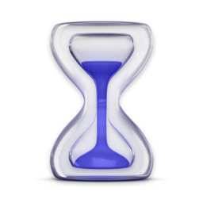
Screen Time alternative for MacNotchUsage knows when you're actually watching, not just when a tab is open. It sorts every minute into focus, neutral and distraction, and nudges you from the notch while it's still happening.
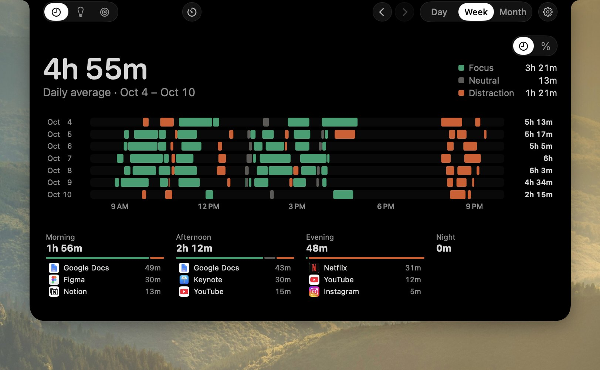
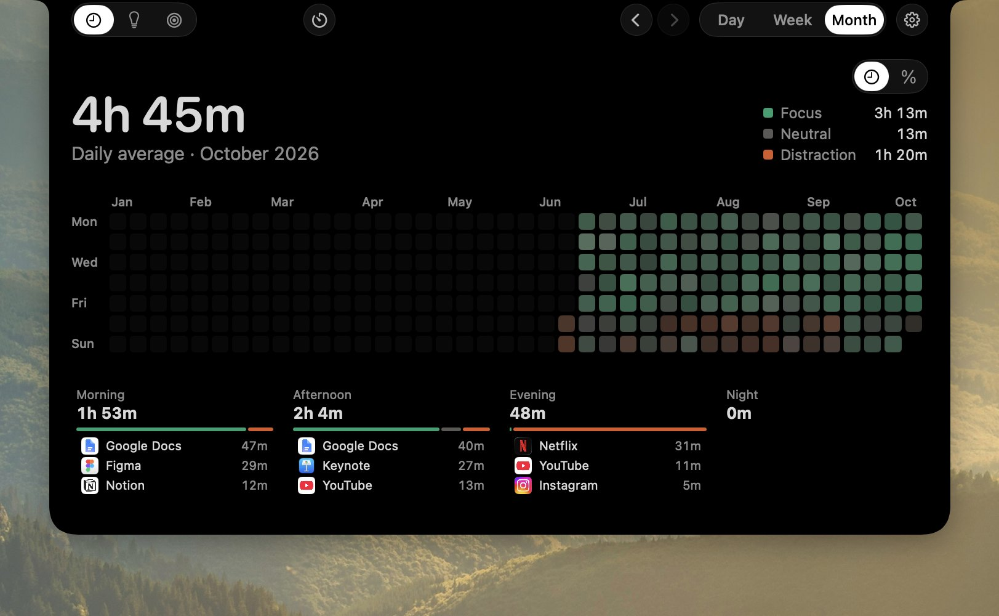
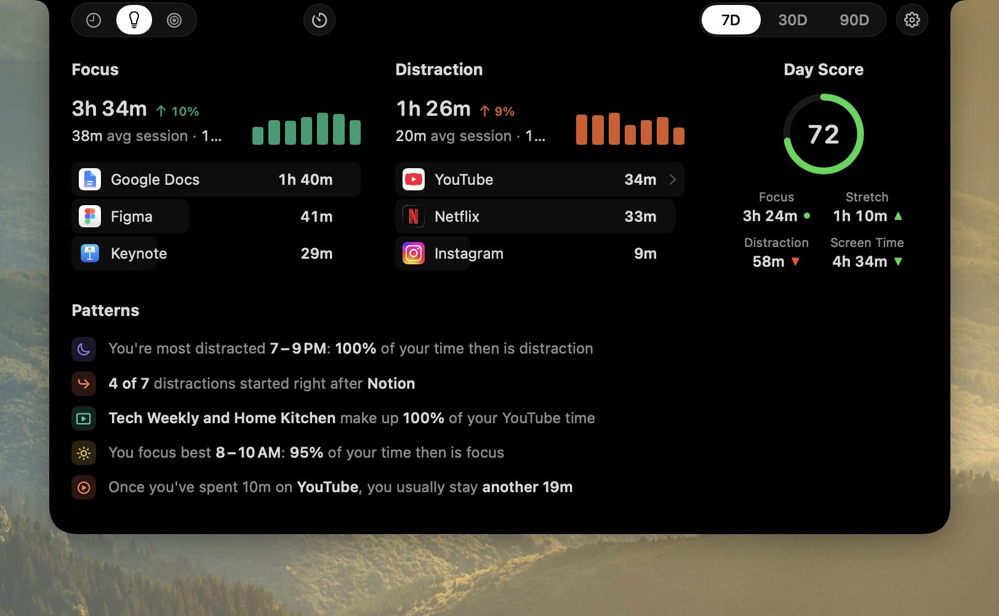
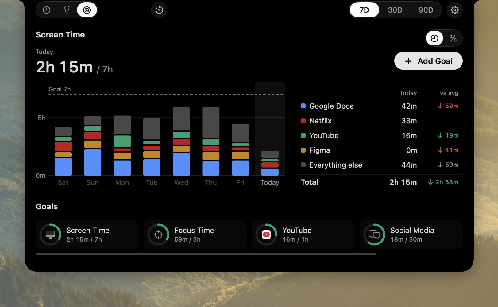
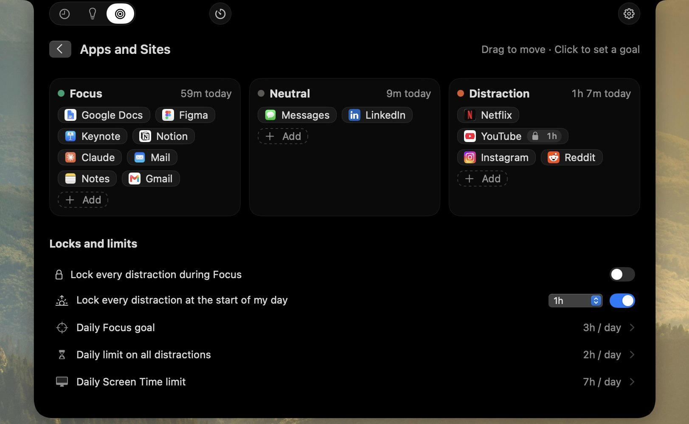
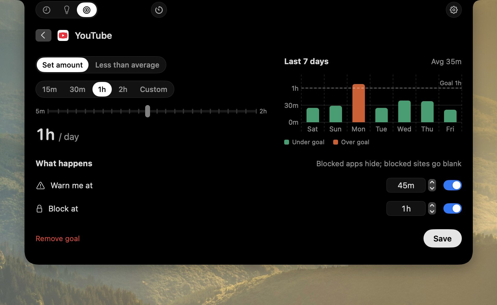
A nudge from the notch, while it's still happening
At every full hour on a site, a small panel grows out of the notch and folds back in after 7 seconds. It counts only what you actually watch, so a paused video or a background tab never adds up.
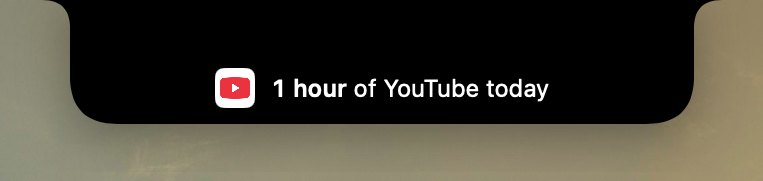
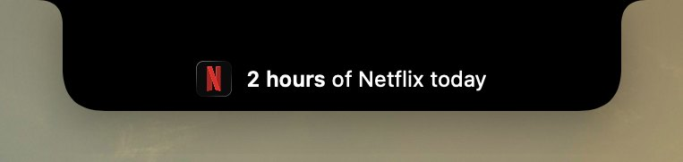
- Every hour on a site, and once all of them together pass 2 hours
- Every hour of distraction, across everything you've marked as one
- A weekly recap of last week's focus and distraction
Your day, beside the notch
Hover the notch for a glance, or keep it showing, and pick what sits on each side. Click it, or press ⌃⌥⌘N anywhere, to open the full analysis.
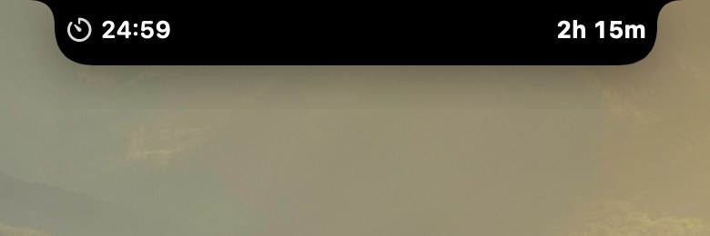
Focus timer
Start a focus from the notch and watch it count down.
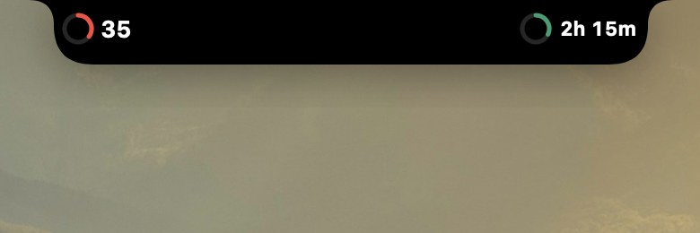
Goals and Day Score
A ring fills toward today's goal, beside yesterday's score.
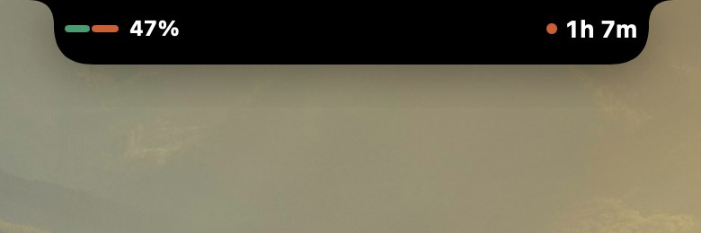
Focus against distraction
Today's split, and how much went to distraction.
Every app and site has a side. You pick it.
Your day becomes one strip of focus, neutral and distraction. Try it below: move any app, site or single YouTube video to another side and watch the day re-color, just as it does in the app.
Timeline
Apps and sites
Shape it around your day
Sort your apps, lock what pulls you away, and make the notch and the colors your own.
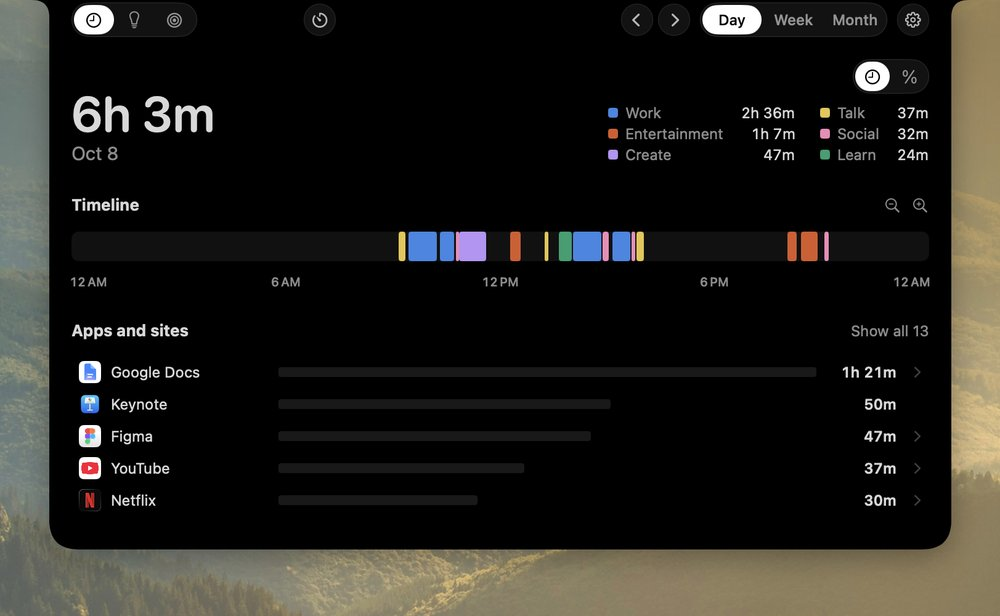
Time by kind
Color the day by Work, Create, Learn, Talk, Entertainment and Social to see what kind of day it was.
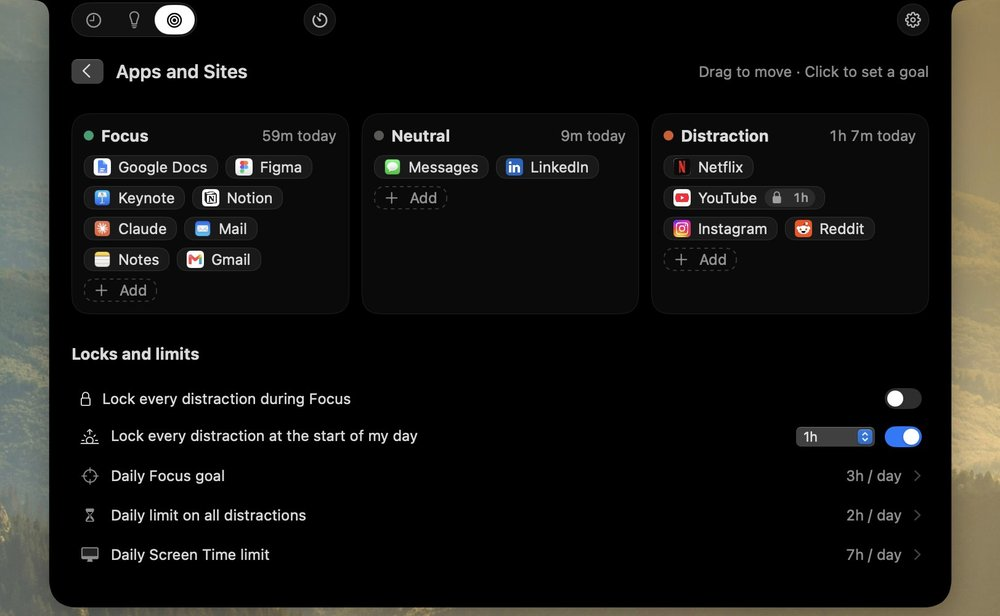
Sort apps into buckets
Focus, Neutral and Distraction side by side. Drag an app across to change its side, or click it to set a limit.
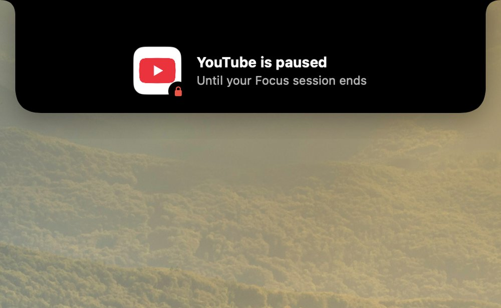
Focus lock
Distractions stay paused while a focus runs, and open again the moment a break starts.
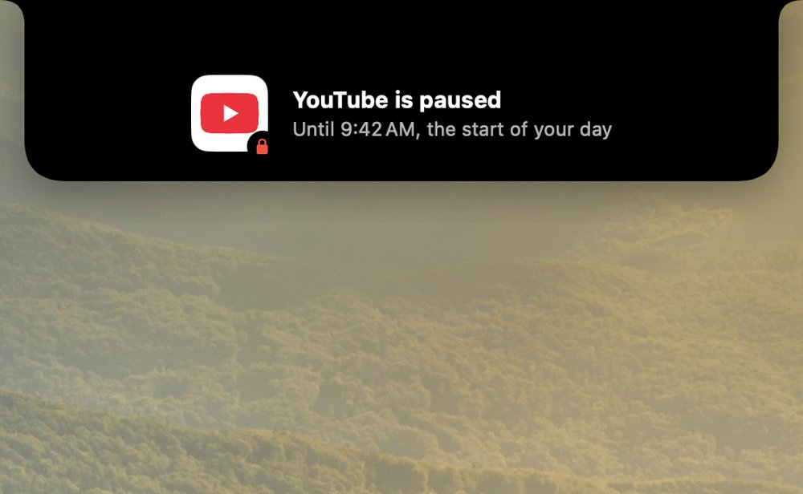
Morning lock
Keep the first hour of your day clear of distractions, from whenever your day begins.
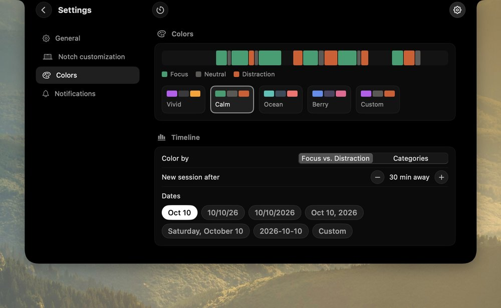
Your colors
Pick Vivid, Calm, Ocean or Berry, or set your own. Every chart re-colors at once.
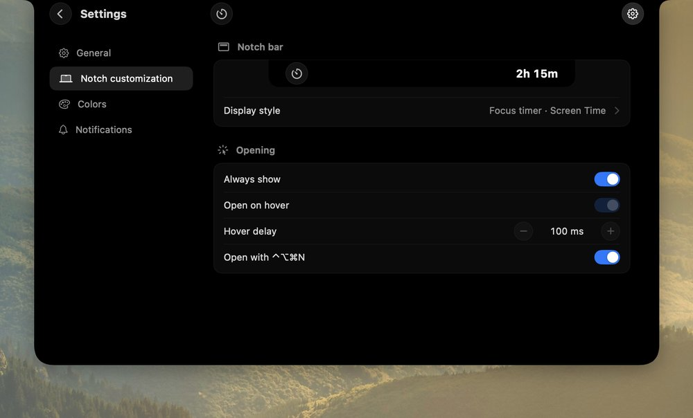
Make the notch yours
Choose what each side of the notch shows and how the glance opens, with a live preview.
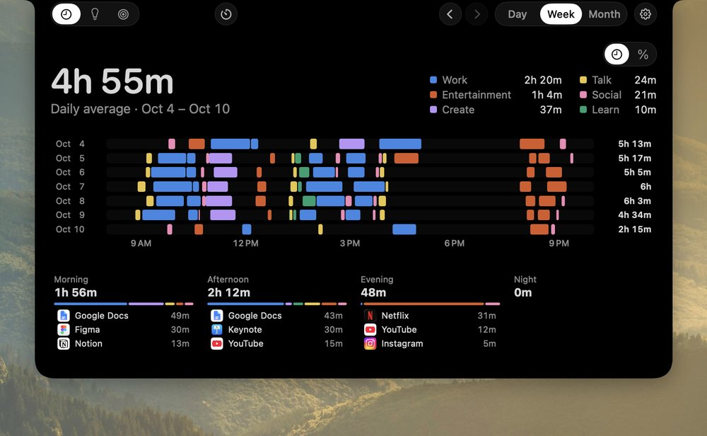
Your week, hour by hour
A lane per day and the parts of the day, so a habit is hard to miss.
Insights that tell you something
Focus and distraction for the last 7, 30 or 90 days, with patterns shown only when your data backs them. Plus one Day Score for yesterday, judged against your own usual day.
Goals that can say no for you
Any limit can warn you from the notch, then block once it's reached. The app hides and the tab goes blank, but nothing is quit and no work is lost.
A warning first, then a block
The notch tells you how close you are, and how long until it blocks.
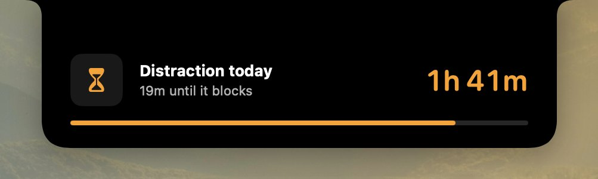
NotchUsage compared with Screen Time
Screen Time is good at a weekly total. NotchUsage also tells you what you were really doing, whether it was focus or distraction, and taps you on the shoulder while it's still happening.
| Feature | Screen Time | NotchUsage |
|---|---|---|
| What counts | Any time in front | Watching, listening or just open |
| A paused video | Same as playing | Kept apart |
| In the moment | Nothing until a limit | An hourly nudge from the notch |
| Categories | Fixed by Apple | Yours, down to a page |
| Your day | A bar per hour | A timeline of sites and pages |
| Insights | Change from last week | Patterns and a Day Score |
| Goals | App limits, downtime | Goals with warnings and blocks |
| Focus timer | None | Built in, with a Focus lock |
| Price | Included with macOS | From $1, once |
Also included
Focus timer
25 minutes on, 5 off, a longer break every fourth round, all adjustable. The notch says what's next.
Pickups
Each unlock of your Mac counts, shown under the day's total, or as a daily average for a week or month.
Every site, by name
Every site is tracked and shown by its brand name and real icon. Private windows count as time only.
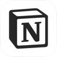
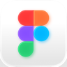
Hidden from screen shares
Nudges and the glance never show up in screen sharing, calls or recordings.
No notch? No problem
On an external display or an older Mac, panels drop from the top center of the screen you're using.
Quiet hours
Pick the hours nudges rest, and turn them off site by site.
Parts of the day
Week and month split into morning, afternoon, evening and night, each with its top apps and sites.
Stays on your Mac
Everything is stored on your Mac. Nothing is uploaded, and there's no account to make.
One price, yours to keep
Buy it once, updates included. Not for you? Get a refund within 14 days.
- Watching time, apart from open time
- Focus, neutral and distraction for every app, site and page
- Hourly nudges and a glance you set up yourself
- Timeline, Insights with a Day Score, and Goals
- Goal blocks, the Focus lock and the Morning lock
- Focus timer, pickups and color themes
Questions
How does it know I'm watching?
Every 5 seconds it checks which tab is in front and what macOS reports as playing. A minute counts as watching only when the front tab's title matches what's playing. Media in another tab counts as listening, kept separate, and music never counts as a distraction.
What counts as focus or distraction?
Work apps and sites start as focus, feeds and video sites as distraction, everything else neutral. Right-click any app, site or page to change it. Changes apply to past days too.
Will it nag me?
No. Nudges appear for 7 seconds and close themselves, with no buttons and no decision to make. Set quiet hours, or turn nudges off per site.
Does it block things?
Only if you ask it to. A goal can block an app or site once its limit is reached, the Focus lock keeps distractions closed during a focus, and the Morning lock keeps the start of your day clear. The app hides, the tab goes blank, nothing is quit. Every lock can be turned off.
What is the Day Score?
One number for yesterday, out of 100, from your focus, your longest focus stretch, distraction, a clear morning and a quiet night, judged against your own usual day. It never streaks and never compares you with anyone.
Which browsers work?
Safari, Chrome, Arc, Brave and Edge. Firefox isn't supported because it doesn't let other apps read its tabs. Time in every other app is tracked without any permission.
What if my Mac doesn't have a notch?
Panels drop from the top center of the active screen instead, and ⌃⌥⌘N opens the analysis from anywhere.
Does it show up when I share my screen?
No. Nudges and the glance are hidden from screen sharing and recordings.
What if it doesn't fit how I work?
Email within 14 days of buying and we'll refund it, no questions asked.
See where the hours really go
Screenshots are of the app itself, filled with sample data.